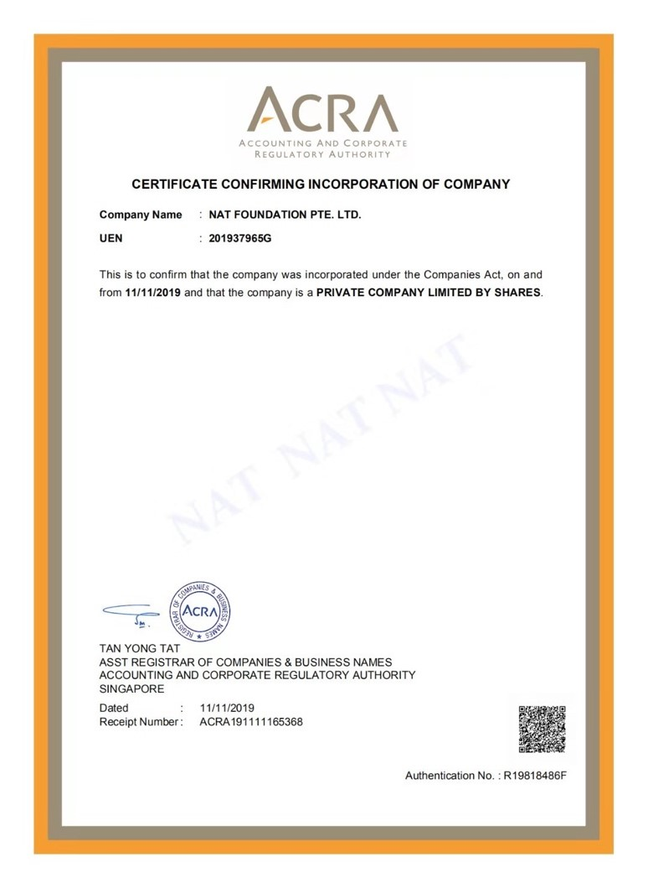

关于NAT基金会
NAT（新加坡）基金会，英文名称： NAT FOUNDATION PTE.LTD. ，总部设在新加坡，是由世界幸福产业控股集团有限公司投资成立的组织。基金会致力于区块链技术应用、数字化资产研究，推动区块链技术在中国地区的产业化发展。NAT基金会已锚定中国一家创始生态合伙人约50亿以上美元实物资产作为数字资产通证，计划发行数字通证总量6,193,690,081，预计2020年元旦前后在ZG.com上链交易。

关于NAT基金会